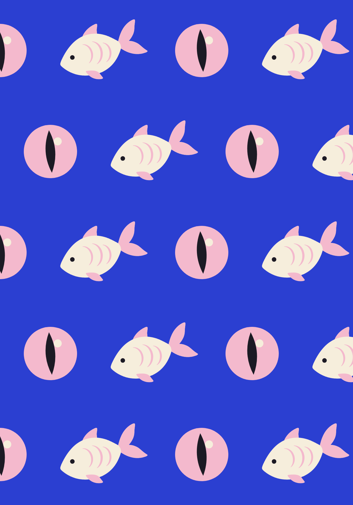
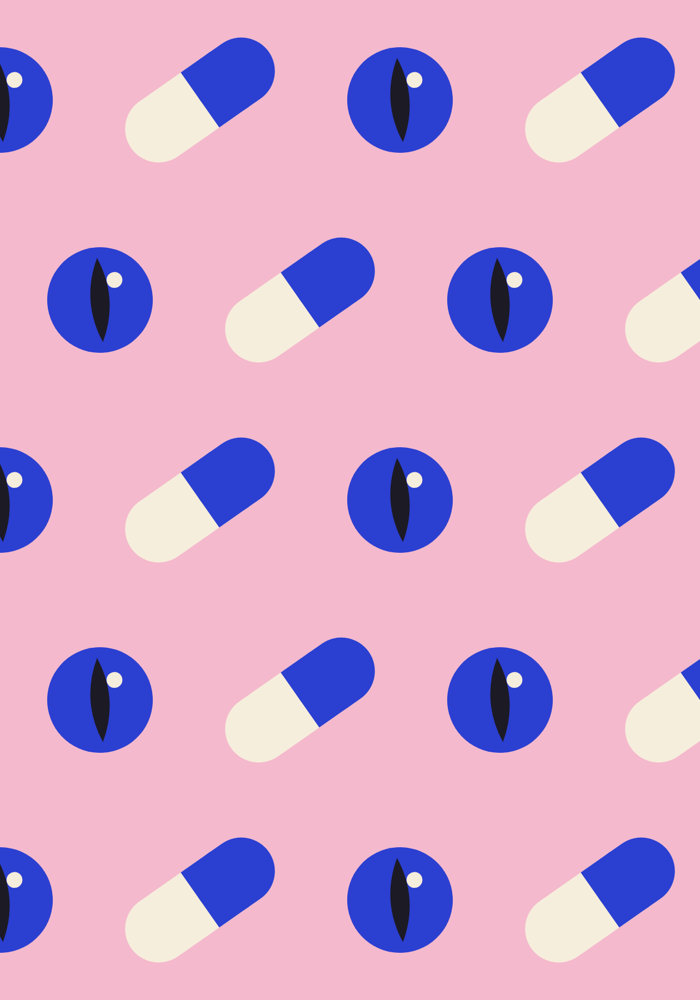

<!doctype html>
<!-- MIAU.LAB · pranchas animadas do Behance (a Emi: "pro Behance eu queria que tivesse motion"). 1400x1050, em loop.
     ?m=gato   o gato em close: olha para os lados e pisca (4 s)
     ?m=cores  o logo trocando de cor no ritmo, travado no lugar (3 s)
     ?m=padrao os dois padrões correndo em sentidos opostos, emenda perfeita (4 s)
     ?m=frase  "Ciência que ronrona." trocando de cor (1,5 s)
     Uso: render-motion.mjs ?m=… saida.mp4 (window.quadro(t), window.DURACAO) -->
<html><head><meta charset="utf-8"><style>
@font-face { font-family: Archivo; src: url(../../../fonts/Archivo-var-latin.woff2); font-weight: 100 900; font-stretch: 62% 125%; }
@font-face { font-family: Mono; src: url(../../../fonts/SpaceMono-normal-700.woff2); font-weight: 700; }
@font-face { font-family: IS; src: url(../../../fonts/InstrumentSans-var.woff2); font-weight: 400 700; }
@font-face { font-family: Mea; src: url(../../../fonts/MeaCulpa.woff2); }
html, body { margin: 0; background: #000; }
#p { position: relative; width: 1400px; height: 1050px; overflow: hidden; }
.cena { position: absolute; inset: 0; overflow: hidden; visibility: hidden; }
.logo { position: absolute; width: 899px; height: 700px; transform-origin: 0 0; }
.mic { position: absolute; font: 700 17px/1.45 Mono; letter-spacing: .07em; text-transform: uppercase; white-space: nowrap; }
.pil { position: absolute; border: 2px solid currentColor; border-radius: 999px; padding: 11px 26px 10px; font: 500 20px/1 IS; letter-spacing: .08em; text-transform: uppercase; white-space: nowrap; }
</style><script src="../gato-v3/gato.js"></script><script src="../logo.js"></script></head><body><div id="p"></div>
<script>
const W = 1400, H = 1050, p = document.getElementById('p'), modo = new URLSearchParams(location.search).get('m') || 'gato';
const C = { cobalto: '#2B3FD1', rosa: '#F4B9CD', manteiga: '#F2DC8B', creme: '#F6EEDC', nanquim: '#1C1A24' };
const cv = document.createElement('canvas').getContext('2d');
const eo = x => 1 - Math.pow(1 - x, 3), cl = (x, a = 0, b = 1) => Math.max(a, Math.min(b, x)), fx = (t, a, d) => cl((t - a) / d);
const cena = bg => { const d = document.createElement('div'); d.className = 'cena'; d.style.background = bg; p.appendChild(d); return d; };
function logo(s, cx, cy, w, o, ass = true) {
  const k = w / 899, d = document.createElement('div'); d.className = 'logo';
  d.style.cssText = `left:${cx - 899 * k / 2}px;top:${cy - (141 + 700) / 2 * k}px;transform:scale(${k})`;
  s.appendChild(d); miauLogoV3(d, Object.assign({ gato: C.nanquim, olho: C.rosa }, o));
  if (ass && o.lab !== false) { const f = 52, fonte = `500 ${f}px IS`; cv.font = fonte; const mm = cv.measureText('F'), cap = mm.actualBoundingBoxAscent;
    const lh = 700 - 610 - cap, top = 610 + cap - (lh - (mm.fontBoundingBoxAscent + mm.fontBoundingBoxDescent)) / 2 - mm.fontBoundingBoxAscent;
    d.insertAdjacentHTML('beforeend', `<div style="position:absolute;left:-1px;top:${top}px;font:${fonte};line-height:${lh}px;letter-spacing:-.015em;color:${o.cor}">Fórmula veterinária.<br>Feita pra gatos.</div>`); }
  d.olhos = [...d.children[0].children[1].children].map(g => ({ g, t0: g.getAttribute('transform'), pup: [...g.children].slice(1) }));
  return d;
}
function olho(L, pisca, olhar = 0, olharY = 0) {
  L.olhos.forEach(({ g, t0, pup }) => { g.setAttribute('transform', `${t0} scale(1 ${Math.max(.06, 1 - pisca)})`);
    pup.forEach(e => e.setAttribute('transform', `translate(${olhar * 12} ${olharY * 6})`)); });
}
const piscada = (t, em) => { const u = (t - em) / .18; return u > 0 && u < 1 ? Math.sin(Math.PI * u) : 0; };
const cantos = (s, cor, [a, b, c, d], m = 44) => s.insertAdjacentHTML('beforeend', `
  <div class="mic" style="left:${m}px;top:${m}px;color:${cor}">${a}</div><div class="mic" style="right:${m}px;top:${m}px;color:${cor};text-align:right">${b}</div>
  <div class="mic" style="left:${m}px;bottom:${m}px;color:${cor}">${c}</div><div class="mic" style="right:${m}px;bottom:${m}px;color:${cor};text-align:right">${d}</div>`);
const lista = [];   // [cena, t0, t1, anim]
Promise.all(['500 100px IS', '400 100px Mea', '900 100px Archivo', '700 64px Mono'].map(f => document.fonts.load(f))).then(() => {
  if (modo === 'gato') {   // o gato em close, olhando de um lado para o outro e piscando
    const s = cena(C.cobalto), k = 1400 * 3.2 / 899, L = logo(s, 0, 0, 1400 * 3.2, { cor: C.rosa, fundo: C.cobalto, lab: false }, false);
    L.style.left = (700 - 798 * k) + 'px'; L.style.top = (470 - 230 * k) + 'px';
    cantos(s, C.creme, ['MIAU.LAB — símbolo', 'curioso desde sempre', '', '']);
    window.DURACAO = 4;
    lista.push([s, 0, 4, t => { const ol = t < .8 ? 0 : t < 1.6 ? -1 : t < 2.4 ? 1 : 0, oy = t > 2.9 && t < 3.5 ? -1 : 0;
      olho(L, Math.max(piscada(t, .5), piscada(t, 3.55)), ol, oy); }]);
  }
  if (modo === 'cores') {   // logo travado, cores trocando a cada meio segundo
    const E = [[C.cobalto, C.rosa, C.creme, C.nanquim], [C.rosa, C.cobalto, C.nanquim, C.creme], [C.manteiga, C.cobalto, C.nanquim, C.manteiga],
               [C.creme, C.cobalto, C.rosa, C.nanquim], [C.cobalto, C.manteiga, C.rosa, C.nanquim], [C.rosa, C.cobalto, C.cobalto, C.creme]];
    window.DURACAO = 3;
    E.forEach(([bg, cor, lf, lc], i) => { const s = cena(bg), L = logo(s, 700, 525, 820, { cor, fundo: bg, labFundo: lf, labCor: lc });
      cantos(s, cor, ['MIAU.LAB', 'FÓRMULA VETERINÁRIA', 'FEITO PRA GATOS', `Nº0${i + 1}`]);
      lista.push([s, i * .5, i * .5 + .5, t => { s.style.transform = `scale(${1 + .02 * (1 - eo(fx(t, 0, .2)))})`; olho(L, i === 3 ? piscada(t, .12) : 0, i === 1 ? -1 : i === 4 ? 1 : 0); }]); });
  }
  if (modo === 'padrao') {  // dois padrões correndo em sentidos opostos (o deslocamento é um período inteiro: emenda perfeita)
    const s = cena(C.creme); window.DURACAO = 4;
    s.insertAdjacentHTML('beforeend', `<div style="position:absolute;left:0;top:0;width:700px;height:1050px;overflow:hidden"></div>
      <div style="position:absolute;left:700px;top:0;width:700px;height:1050px;overflow:hidden"></div>
      <div class="pil" style="left:40px;bottom:40px;background:${C.creme};color:${C.cobalto};border-color:${C.creme}">petiscos · olho + peixinho</div>
      <div class="pil" style="left:740px;bottom:40px;background:${C.creme};color:${C.cobalto};border-color:${C.creme}">suplementos · olho + cápsula</div>`);
    cantos(s, C.creme, ['07 — padrões', '', '', ''], 40);
    const a = s.querySelector('#a'), b = s.querySelector('#b');
    lista.push([s, 0, 4, t => { const u = t / 4; a.style.transform = `translateY(${-720 * u}px)`; b.style.transform = `translateY(${-720 + 720 * u}px)`; }]);
  }
  if (modo === 'frase') {
    const tinta = (t, font, ls = 0) => { cv.font = font; cv.letterSpacing = ls + 'px'; const m = cv.measureText(t); cv.letterSpacing = '0px';
      return { asc: m.actualBoundingBoxAscent, desc: m.actualBoundingBoxDescent, l: m.actualBoundingBoxLeft, r: m.actualBoundingBoxRight }; };
    window.DURACAO = 1.5;
    [[C.rosa, C.cobalto], [C.manteiga, C.cobalto], [C.cobalto, C.rosa]].forEach(([bg, cor], i) => {
      const s = cena(bg);
      const linha = (t, font, ls, f, x, base) => { cv.font = font; const m = cv.measureText('x');
        s.insertAdjacentHTML('beforeend', `<div style="position:absolute;white-space:nowrap;left:${x}px;top:${base - (m.fontBoundingBoxAscent - m.fontBoundingBoxDescent) / 2}px;font:${font};line-height:${f}px;height:0;letter-spacing:${ls}px;color:${cor};display:flex;align-items:center">${t}</div>`); };
      const f1 = 120, F1 = `500 ${f1}px IS`, ls1 = -.04 * f1, m1 = tinta('Ciência que', F1, ls1), f2 = 236, F2 = `400 ${f2}px Mea`, m2 = tinta('ronrona.', F2), vao = 12;
      const alt = m1.asc + m1.desc + vao + m2.asc + m2.desc, topo = H / 2 - alt / 2 - 30, b1 = topo + m1.asc, b2 = b1 + m1.desc + vao + m2.asc;
      linha('Ciência que', F1, ls1, f1, W / 2 - (m1.r - m1.l) / 2, b1); linha('ronrona.', F2, 0, f2, W / 2 - (m2.r - m2.l) / 2, b2);
      s.insertAdjacentHTML('beforeend', `<div class="pil" style="left:50%;transform:translateX(-50%);top:${b2 + m2.desc + 34}px;color:${cor}">feito pra gatos</div>`);
      cantos(s, cor, ['MIAU.LAB', 'assinatura', '', '']);
      lista.push([s, i * .5, i * .5 + .5, () => {}]); });
  }
  window.quadro = t => lista.forEach(([s, a, b, f]) => { const v = t >= a && t < b; s.style.visibility = v ? 'visible' : 'hidden'; if (v) f(t - a); });
  window.quadro(0); document.body.dataset.pronto = 1;
});
</script></body></html>
